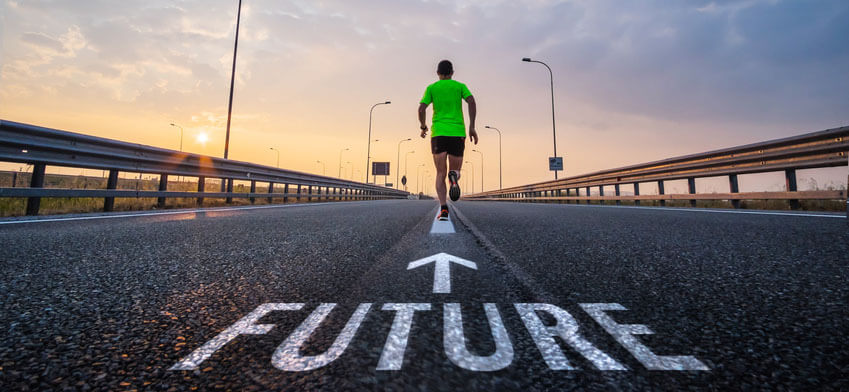
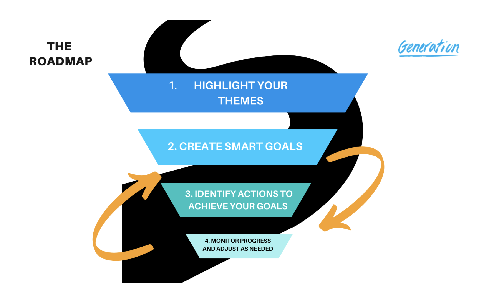

FUTURE ORIENTATION

Future Orientation means creating a roadmap for your future, understanding
how today’s actions impact those goals, and
frequently checking
progress toward the goals. Being future-oriented motivates you to achieve
goals and helps you
make better decisions.
THE PROCESS
The process of creating a roadmap for your future starts with highlighting
themes you want to live your life by, which
then drive your goals.
These goals may be personal or professional. It is important to set
long-term goals that
are SMART: Specific, Measurable, Attainable, Relevant, Time Bound.
Together, your themes and goals can create
a roadmap to help you guide
your daily actions.
ROAD MAP TO THE FUTURE
